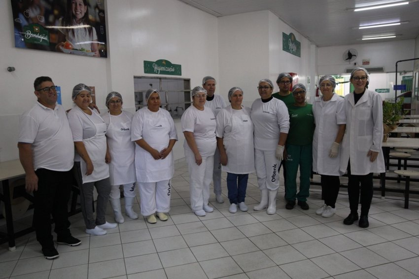

O que é o Objetivo de Desenvolvimento Sustentável 1?
A erradicação da pobreza é o primeiro dos Objetivos de Desenvolvimento sustentável (ODS) estabelecidos pela ONU (Organização das Nações Unidas) em 2015, durante a conferência Rio +20. Estes objetivos consistem em um conjunto de metas que devem ser cumpridas, globalmente até o ano de 2030.
A ideia principal deste objetivo está em “erradicar a pobreza extrema para todas as pessoas em todos os lugares”. São considerados extremamente pobres, os indivíduos que dispõem de menos de US$ 1,90 por dia, ou seja, praticamente não conseguem satisfazer as necessidades mais básicas.
Desemprego, exclusão social e alta vulnerabilidade de determinadas populações aos desastres naturais, são algumas das causas da pobreza. Essas e outras causas da pobreza, acabam resultando em desigualdades e, por consequência, desnutrição, exclusão e também falta de acesso à educação.
Um bom exemplo: Restaurante Popular (Bandejão)
O Restaurante Popular ou Bandejão serve refeições nutricionalmente adequadas e a custo acessível para a população de Chapecó/SC. Atualmente, conta com duas unidades de atendimento no município.
Serviços:
Oferece almoço barato para pessoas em situação de vulnerabilidade na cidade de Chapecó/SC. Pessoas que comprovarem renda familiar inferior a três salários mínimos e que sejam residentes em Chapecó, poderão almoçar pelo valor subsidiado de R$ 5,00. Demais pessoas que desejarem poderão almoçar pelo valor normal, de R$ 10,00, não necessitando cadastramento. Aproximadamente 50% do valor das refeições são custeados pela administração municipal, com o intuito de contribuir para a redução do número de pessoas em situação de insegurança alimentar.
Origem e Aquisição dos Alimentos:
Os alimentos são adquiridos pela Administração Municipal através de licitação. A maior parte dos alimentos são produzidos por agricultores familiares e empresas da cidade e de municípios vizinhos e adquiridos por intermédio do PAA (Programa de Aquisição de Alimentos).
Equipe:
A equipe de trabalho é composta por Coordenador, Nutricionista, Cozinheira, Auxiliar de Cozinha, Auxiliar de Serviços Gerais, Auxiliar Administrativo e Almoxarife.
História:
No centro de Chapecó, o Restaurante Popular Bandejão foi inaugurado em de agosto de 2007. O Bandejão II, localizado no Bairro Efapi, foi inaugurado em agosto de 2016.
Premiações:
Em razão do bom atendimento e pelo ótimo trabalho visando à segurança alimentar, o Restaurante já recebeu premiações. Dentre elas o Prêmio “Josué de Castro”, em Modelagem de Gestão Bem Sucedida, oferecido pelo Ministério de Desenvolvimento Social e Combate à Fome, no ano de 2008.